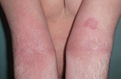
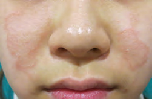
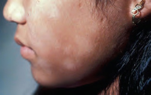
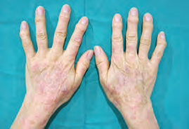
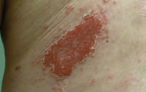
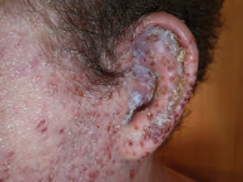

- Distribución y edad orientan la dermatitis atópica mejor que una analítica.
- Exposición localizada o laboral obliga a pensar en irritación o contacto alérgico.
- Infección real: dolor, pústulas, extensión rápida o deterioro; no solo costra o exudado.
Prurito + distribución típica + curso en brotes
La dermatitis atópica es un diagnóstico clínico. Xerosis, antecedentes personales o familiares de atopia y comienzo temprano apoyan, pero la distribución cambia con la edad y no todos los eczemas son atópicos.
| Etapa | Distribución orientativa | Detalle que ayuda |
|---|---|---|
| Lactante | Mejillas, cuero cabelludo y superficies extensoras; puede ser exudativa. | Suele respetar el triángulo nasolabial y el área del pañal. |
| Infancia | Flexuras antecubitales y poplíteas, muñecas, tobillos y cuello. | Liquenificación por rascado crónico. |
| Adolescente/adulto | Cara, párpados, cuello, flexuras y dorso de manos. | Pregunta por trabajo, cosméticos y contacto añadido. |
| Persona mayor | Xerosis marcada, tronco y extremidades; el patrón flexural puede faltar. | Revisa fármacos, sarna, eccema asteatósico y diagnósticos sistémicos. |

Simetría, prurito y engrosamiento por rascado en una localización típica infantil.
Recopilación Dermatología 2025 · pág. 26.
El respeto nasolabial es una pista, no un criterio aislado.
Recopilación Dermatología 2025 · pág. 26.
Hipopigmentación inflamatoria tenue, más visible en fototipos altos; no es vitíligo.
Recopilación Dermatología 2025 · pág. 27.Borde activo circinado, asimetría y empeoramiento con corticoide. Realiza examen micológico si hay duda.
Placa más neta, escama gruesa, cuero cabelludo, ombligo, sacro o uñas.
Prurito nocturno, convivientes, espacios interdigitales, muñecas y genitales.
Geometría o localización ligada a una exposición; puede coexistir con atopia.
Romper el ciclo exige tratar barrera e inflamación a la vez
Una receta sin instrucciones de cantidad, zona, duración y mantenimiento favorece corticofobia o sobreuso. Entrega un plan de brote y otro para cuando la piel esté bien.
Producto sin perfume elegido por tolerancia, en cantidad generosa, especialmente tras una ducha corta y tibia.
Corticoide tópico de potencia adaptada a edad, zona y grosor hasta controlar el brote; la infradosificación prolonga la enfermedad.
En zonas de recaída frecuente, antiinflamatorio tópico intermitente dos días por semana puede espaciar brotes.
Comprueba diagnóstico, cantidad, adherencia, contacto, infección y necesidad de tratamiento especializado.
La potencia depende de la zona; la cantidad depende de la superficie
Cara, pliegues y genitales requieren potencias bajas y cursos cortos. Tronco y extremidades toleran potencias medias; placas liquenificadas pueden necesitar más potencia durante menos tiempo. Revisa siempre la ficha técnica en niños.
Corticoide tópico
- Una aplicación diaria suele ser suficiente para muchos preparados; sigue la ficha del producto.
- Elige vehículo: crema en lesión húmeda, pomada en placa seca o liquenificada.
- Explícalo en unidades de punta de dedo o gramos para evitar “capa fina” indeterminada.
- Espacia corticoide y emoliente unos minutos; continúa hidratando si no escuece.
Inhibidor de calcineurina
- Tacrolimus o pimecrolimus son útiles en cara, pliegues y mantenimiento cuando se quiere evitar atrofia.
- Escozor transitorio es frecuente los primeros días.
- No se aplican sobre infección activa no tratada.
- Edad e indicación varían por producto: comprobar CIMA.
Una dieta de exclusión solo se justifica si existe una relación clínica reproducible y un estudio dirigido. Las restricciones empíricas, sobre todo en niños, añaden riesgo nutricional y no tratan la dermatitis por sí mismas.
Atopia, irritación y alergia suelen superponerse
Manos húmedas, detergentes, gel hidroalcohólico, guantes, trabajo sanitario y productos capilares o de uñas cambian la barrera. La distribución aporta pistas y las pruebas epicutáneas evalúan alergia de contacto, no “alergia en general”.

La cronicidad mezcla fisura, hiperqueratosis y pérdida de barrera; pregunta qué toca el paciente a diario.
Recopilación Dermatología 2025 · pág. 29.Intervención laboral concreta
- Reducir trabajo húmedo y lavado innecesario.
- Guante adecuado a la tarea, con algodón interior si uso prolongado.
- Emoliente tras lavados y al terminar la jornada.
- Fotografiar distribución y revisar fichas de productos.
- Derivar para epicutáneas si persiste, recidiva o hay sospecha profesional.
Exudado y costra no bastan para prescribir antibiótico
La piel atópica coloniza con frecuencia por S. aureus. Considera infección bacteriana cuando aparecen pústulas, costra melicérica extensa, dolor, calor, extensión rápida, fiebre o deterioro; si el paciente está estable, no se recomienda antibiótico rutinario solo por un brote húmedo.

La costra orienta, pero extensión, dolor y estado general deciden si precisa antibiótico y por qué vía.
Recopilación Dermatología 2025 · pág. 27.
Erosiones monomorfas, dolorosas y “en sacabocados”, a veces con fiebre: excepción que requiere antiviral sistémico rápido.
Recopilación Dermatología 2025 · pág. 28.Cuándo no esperar a la revisión ordinaria
- Erosiones monomorfas dolorosas o vesículas agrupadas con fiebre: sospecha eczema herpético.
- Afectación periocular u ocular.
- Celulitis, dolor creciente, fiebre o mal estado general.
- Eritrodermia, pérdida importante de sueño/ingesta o fracaso social de cuidados.
Deriva cuando el plan tópico bien ejecutado no basta
Plan escrito, revisión de técnica y mantenimiento proactivo.
También si afecta cara/manos de forma relevante o deteriora sueño y calidad de vida.
Distribución atípica, ocupacional, facial/palpebral o empeoramiento con productos tópicos.
Antiviral precoz y valoración de ojo, extensión y estado sistémico.
Referencias utilizadas
- EuroGuiDerm. Living guideline for atopic eczema, actualizaciones 2025–2026.
- NICE. Secondary bacterial infection of eczema: antimicrobial prescribing (NG190).
- Actualización Dermatología 2025 - Recopilación, capítulo 4. Fuente secundaria y procedencia de las fotografías.